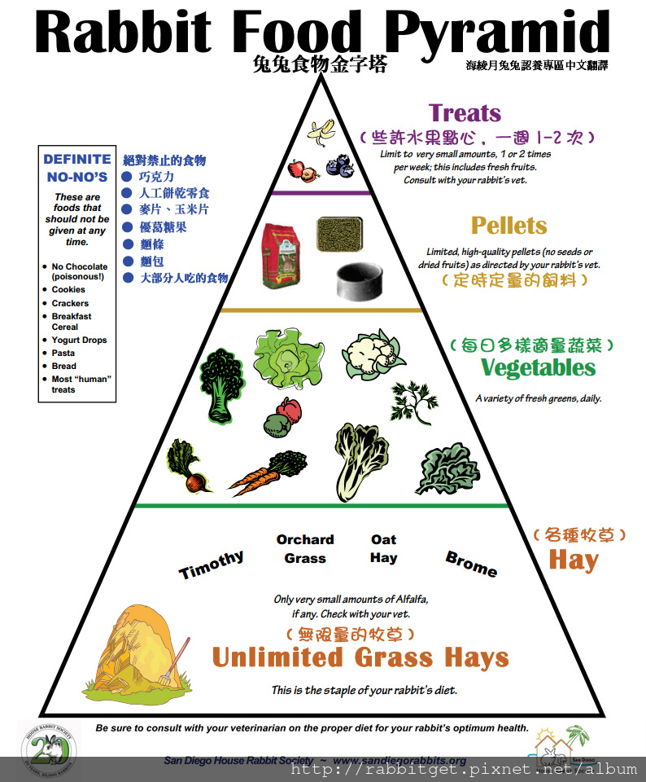

| 年齡 | 飲食 | |
|---|---|---|
| 嬰兒期 | 出生~1個月 | 母乳 |
| 幼兔期 | 1~3個月 | 苜蓿草+幼兔飼料 |
| 成長期 | 3~6個月 | 苜蓿草+提摩西草+幼兔飼料+成兔飼料+蔬菜 |
| 成兔期 | 6個月~5歲 | 提摩西草+甜燕麥草+果園草+成兔飼料+蔬菜 |
| 老兔期 | 5歲以上 | 提摩西草+甜燕麥草+果園草+老兔飼料+蔬菜+水果 |
主食:無限量牧草>>適量飼料>>少量新鮮綠葉蔬菜
請參考下圖:兔兔食物金字塔食物分配比例圖

1. 提摩西草 Timothy Hay： 作為兔兔主食牧草最佳。十月下旬入關最鮮頂級二割牧草，幾乎都是草葉，色濃葉軟味香，適口性較高！ 一番割為長梗較多的草，纖維質較高。可依照兔兔喜歡的口感選擇。適合各年齡兔食用。 小幼兔牙齒發育未完全，可以先練習吃軟葉的部位，等三個月大以後再慢慢練習吃硬梗喔~。 依收割季通常分為: 一割(T1)-全梗，二割(T22)-梗葉混，三割(T3)-全葉
2.紫花苜蓿草 Alfalfa Hay： 幼兔、病兔、懷孕母兔、老兔適用，請配合其他牧草食用。 非常香，可做為成長中的兔兔和病兔的補充營養草。 但因葉片易碎特性，草屑較多，梗較硬，這個和平常吃的苜蓿芽是不一樣的喔! 小幼兔牙齒發育未完全，可以先練習吃軟葉的部位，等三個月大以後再慢慢練習吃硬梗喔~。 注意，因鈣質、蛋白質等營養含量較高，六個月以上健康成兔不適合食用。 苜蓿草為豆科植物，容易產生脹氣、尿鈣沉澱的問題。可以少少量當作零食提供。
3. 澳洲甜燕麥 Oat Hay: 金黃色，味香甜，適口性極佳，麥草類牧草不會脹氣，麥穗顆粒分散已去穀，挑嘴兔可試試， 但是台灣氣候濕熱容易生草蟲，要儘快食用。 營養成分很低，但是纖維質非常高，幫助排便效果非常好，排便會變得很大顆喔~ 適合各年齡兔和其他牧草配合食用。
4. 果園草 Orchard Grass： 可當主食草，和二番割的葉多提摩西很相近，營養成分也差不多，適合各年齡兔。
1. 壓縮飼料 : 直接牧草切割壓縮製成，因此壓縮飼料比較健康 (例如 美國的路比爾、 Oxbow、Kaytee等)
2. 發泡飼料 : 精製過，就是像餅乾那種脆脆的。 (例如 日本鋼琴兔、GEX等)
3. 多樣化綜合飼料 : 綜合多種乾果料，飼主都會認為多樣化的食材好像比較健康，但是， 反而容易造成兔子嚴重挑食的壞習慣，挑掉不愛吃的短飼料，飼主就只能丟掉，失去原本希望 [健康飲食]的意義。 部分廠牌含過多穀類也容易造成脹氣，甚至還有葵瓜子的，非常不建議。